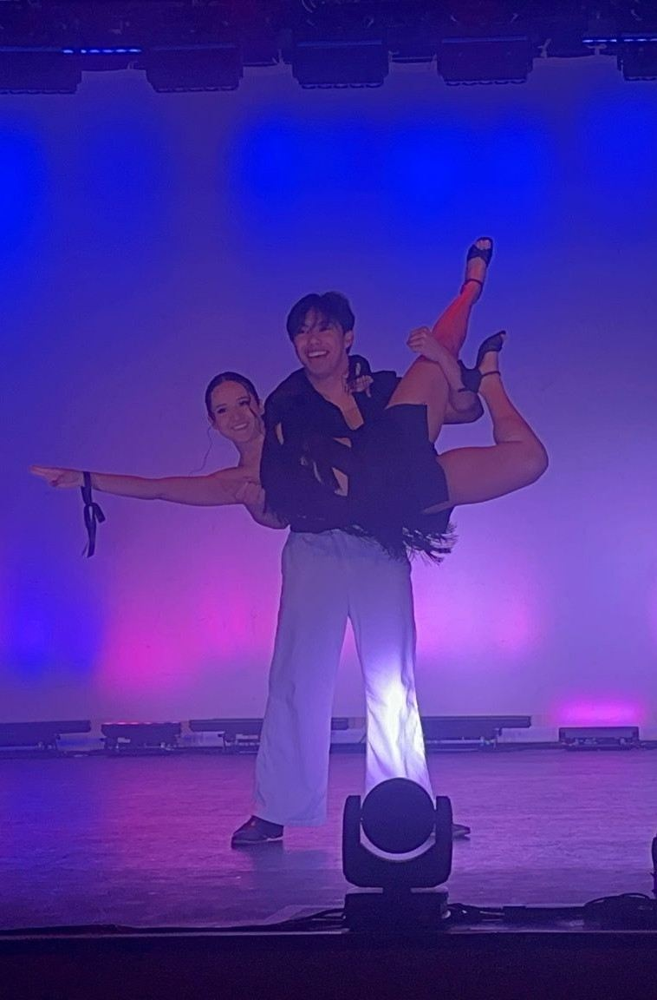

Self-led · Self-funded · Two years from idea to launch
Spotted a problem many salsa dancers share, then built the fix and launched it on the App Store and Google Play. Over two years I funded the app, led an outsourced development team, designed every screen, filmed 1,000 clips myself and built the systems that organise 500 moves.

Delivery
Idea to launch in two years
Through App Store review to release on the Apple App Store and Google Play.
Leadership
Led an outsourced team
Directed external developers from concept through to release.
Structure
500 moves, 32 positions
A naming system that gives every move a clear, consistent place.
Content
1,000 clips produced
Filmed in one standardised setup, edited and graded in DaVinci Resolve.
App demo
A one-minute walkthrough: move clips playing alongside the app's routine and move screens.
After five years of dancing and performing salsa, I noticed a pattern. Dancers learn dozens of moves but, on the floor, keep reaching for the same few. A move learned two weeks ago is easily forgotten, which leads to stale dances and a plateau in learning. I checked with other dancers and found it wasn't just me.
The insight: intermediate and advanced dancers can mirror a move almost instantly once they see it. So the goal was a fast way to see the moves you already know, in context.
Funded the product and led an outsourced development team through two iterations of development and App Store review. I designed the logo and its animation, and the app itself in Figma, with a token-based design system and more than 70 screens, including the onboarding flow.
I named 500 moves across 32 positions and built a move-stitching system over five iterations. I found a venue, learned three-point lighting, and filmed all 1,000 clips myself in a standardised setup, re-shooting until they were right. Every Salsivo video, from the move clips to the demo and logo animation, I edited and colour graded in DaVinci Resolve.
Salsivo is live on the Apple App Store and Google Play, with a clip library covering beginner, intermediate and advanced dancers.
Along the way I learned to take an idea to market, lead a team, make films and design an app, and the next challenge is marketing it.
| Result | Launched on iOS and Android |
|---|---|
| My role | Conceived, funded and led the product; app designer |
| Team | Outsourced development team, directed by me through 2 development iterations |
| Filming | Self-shot at a venue I sourced, with three-point lighting |
| Design | Figma, token-based design system, 70+ screens with onboarding |
| Brand | Logo and logo animation |
| Content system | 500 moves named across 32 positions; move stitching refined over 5 iterations |
| Video | 1,000 clips filmed in a standardised setup; every video edited and colour graded in DaVinci Resolve |
| Levels | Beginner, intermediate and advanced |
| Timeline | Two years from idea to launch |
How it's organised
The same structured, iterative approach I use in engineering, applied to a product of my own.
Every one of 500 moves named and placed across 32 positions, giving the app a consistent structure to teach from.
A system for joining moves into routines, refined over five iterations and used in the app.
A token-based design system and more than 70 screens, including onboarding, handed to the development team to build.
Contact